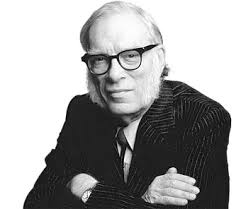

Escritor estadounidense de origen ruso que destacó especialmente en el género de la ciencia-ficción y la divulgación científica. Nacido en el seno de una familia judía, fue el primogénito del matrimonio formado por Judah Asimov y Anna Rachel Berman. Algunos biógrafos fijan erróneamente su nacimiento el día 4 de octubre de 1919, sin reparar en el hecho de que su madre modificó esta fecha con el propósito de que el pequeño Isaac pudiese ingresar en la enseñanza pública un año antes del que le correspondía por su edad.
A comienzos de 1923, la familia Asimov abandonó la recién creada Unión Soviética para trasladarse a los Estados Unidos de América. Instalados, en un principio, en el barrio neoyorquino de Brooklyn (habitado en su mayor parte por ciudadanos hebreos), los Asimov salieron adelante en su nuevo país merced a la tienda de dulces regentada por el cabeza de familia, negocio que poco a poco fue prosperando y mudando de ubicación. En dicho establecimiento se ponían a la venta una serie de publicaciones de ciencia ficción que el jovencísimo Isaac comenzó a devorar con verdadera curiosidad tan pronto como hubo aprendido a leer, sin sospechar que, con el paso de los años, algunas de esas revistas habrían de salir a la calle llevando en sus portadas su propio nombre. Esta precocidad intelectual animó a sus progenitores a facilitarle una temprana formación escolar, por lo que su madre falsificó su fecha de nacimiento para hacer posible su ingreso, en 1925, en una escuela pública de Nueva York. Cursó luego su formación secundaria en la East New York Junior High School, donde se graduó en 1930; pasó luego a la Boys High School, en la que permaneció hasta 1935, año en el que, una vez completados con brillantez sus estudios de bachillerato, se halló preparado para emprender su formación superior con tan sólo quince años de edad. Matriculado en la universidad neoyorquina de Columbia en 1935, al cabo de cuatro años Isaac Asimov ya había conseguido el título de Licenciado en Químicas; posteriormente, nuevos estudios superiores le permitieron licenciarse en Ciencias y Artes y doctorarse en Filosofía. En contra del deseo de sus padres, que esperaban que se dedicara al ejercicio de la Medicina, Asimov decidió que su futuro profesional pasaba necesariamente por el cultivo de la literatura. Durante la Segunda Guerra Mundial trabajó para la Marina estadounidense en unos laboratorios de Filadelfia. En 1942, contrajo matrimonio con Gertrudis Blugerman, con la que tendría dos hijos. Acabada la contienda, Asimov abandonó su puesto en la Navy y siguió estudios de Bioquímica en la Universidad de Columbia, en la que se doctoró 1948. Al año siguiente ingresó en el claustro de la Medical School de la Universidad de Boston, para ejercer la docencia en calidad de profesor ayudante de Bioquímica, materia que continuó explicando en dichas aulas durante casi un decenio (1949-1958). En 1970, Isaac Asimov se separó de su esposa Gertrude para casarse, tres años después, con Janet Opal Jeppson, con la que no tuvo descendencia. A comienzos de la década de los noventa, a raíz de una intervención quirúrgica motivada por una grave afección prostática, Isaac Asimov se vio obligado a reducir su intensa actividad creativa e investigadora. La muerte le sobrevino en la ciudad de Nueva York a comienzos de la primavera de 1992, como consecuencia de un fallo cardíaco y una insuficiencia renal. Escritor prolífico (más de quinientos títulos publicados) y gran divulgador, la obra futurista de Asimov ha gozado de gran popularidad por el sabio equilibrio que consigue entre el estilo, la imaginación literaria y el mundo tecnológico y científico. En 1939 empezó a publicar cuentos de ciencia ficción en las revistas especializadas, imponiéndose en pocos años como el principal representante de la rama "tecnológica" de este género, en la que la visión del mundo futuro y de nuevas formas de organización social se basa siempre en premisas de carácter científico (aunque más o menos futuristas) y los avances tecnológicos correspondientes.